Harrow Estuary — thirty years of tide data, six figures — 17 screenshots
Every screenshot this task has committed, with the numbers the audit ran on it.
These are the same files the gallery thumbnail is taken from. Generated by
tools/shotsindex.mjs from tools/work/shoot/07-dataviz.json, the report the last complete
node tools/shoot.mjs 07-dataviz run wrote. Edit the manifest, not this page.
the task · the gallery
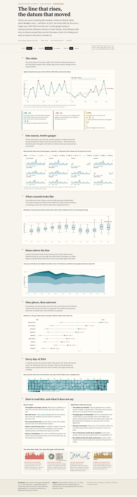
full — index.html at 1440 px viewport, whole page, 666 KB.
console0contrast3unnamed controls0img without alt0landmarks header+main+footer
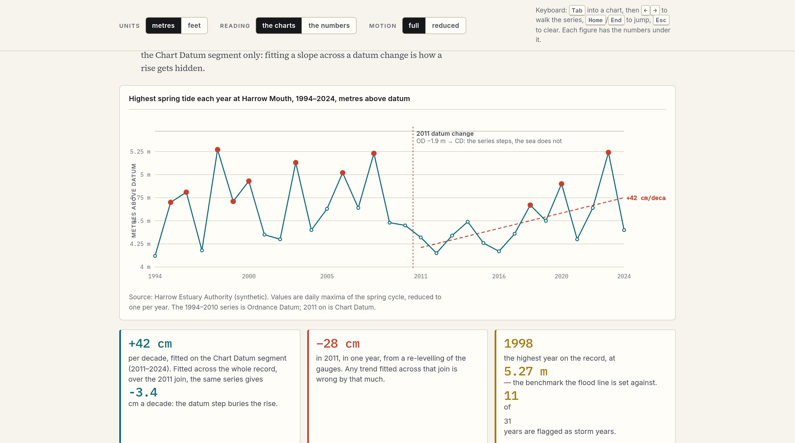
claim — index.html at 1400 px viewport, 244 KB.
console0contrast3unnamed controls0img without alt0landmarks header+main+footer
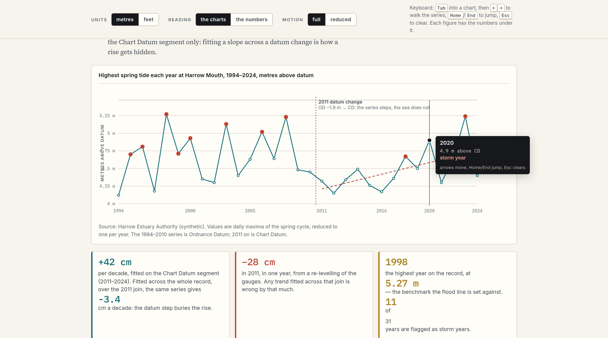
claim-cursor — index.html at 1400 px viewport, 249 KB.
console0contrast3unnamed controls0img without alt0landmarks header+main+footer
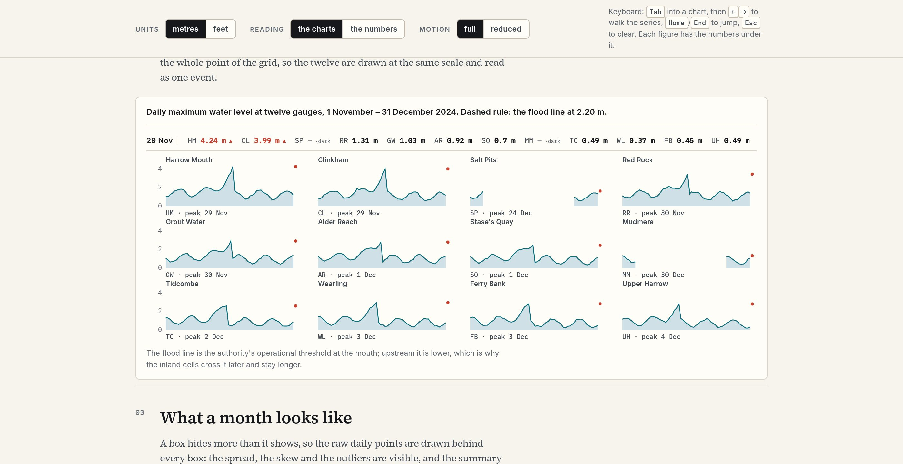
gauges — index.html at 1400 px viewport, 232 KB.
console0contrast0unnamed controls0img without alt0landmarks header+main+footer
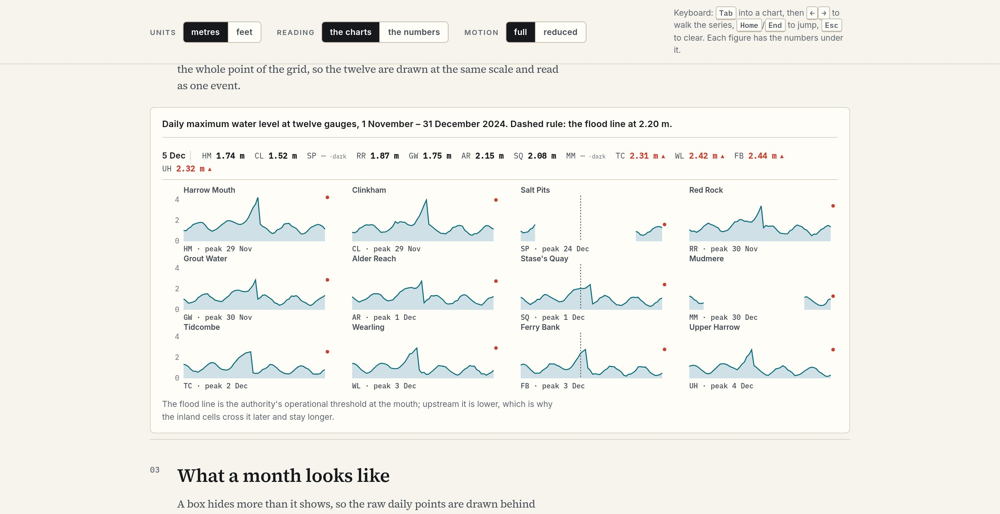
gauges-cross — index.html at 1400 px viewport, 229 KB.
console0contrast0unnamed controls0img without alt0landmarks header+main+footer
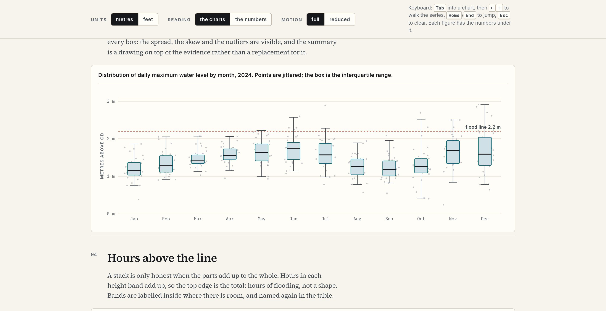
boxes — index.html at 1400 px viewport, 214 KB.
console0contrast0unnamed controls0img without alt0landmarks header+main+footer
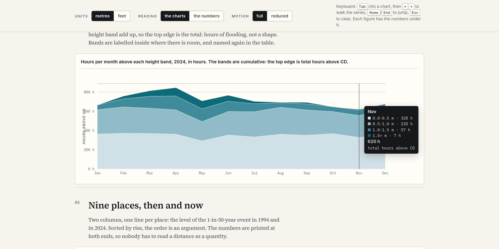
stack — index.html at 1400 px viewport, 201 KB.
console0contrast0unnamed controls0img without alt0landmarks header+main+footer
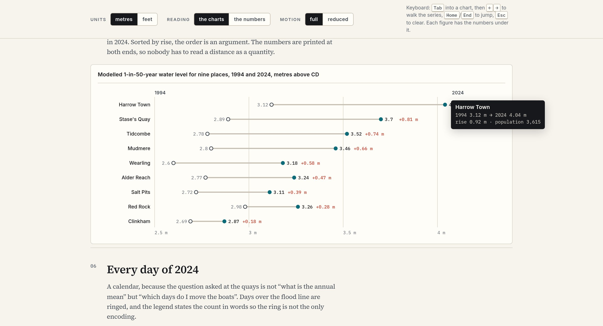
slope — index.html at 1400 px viewport, 199 KB.
console0contrast0unnamed controls0img without alt0landmarks header+main+footer
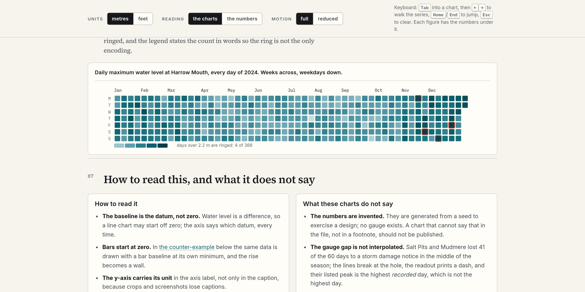
calendar — index.html at 1400 px viewport, 338 KB.
console0contrast0unnamed controls0img without alt0landmarks header+main+footer
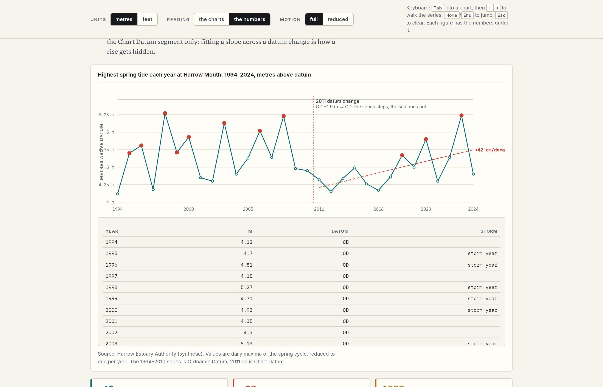
numbers — index.html at 1400 px viewport, 239 KB.
console0contrast3unnamed controls0img without alt0landmarks header+main+footer
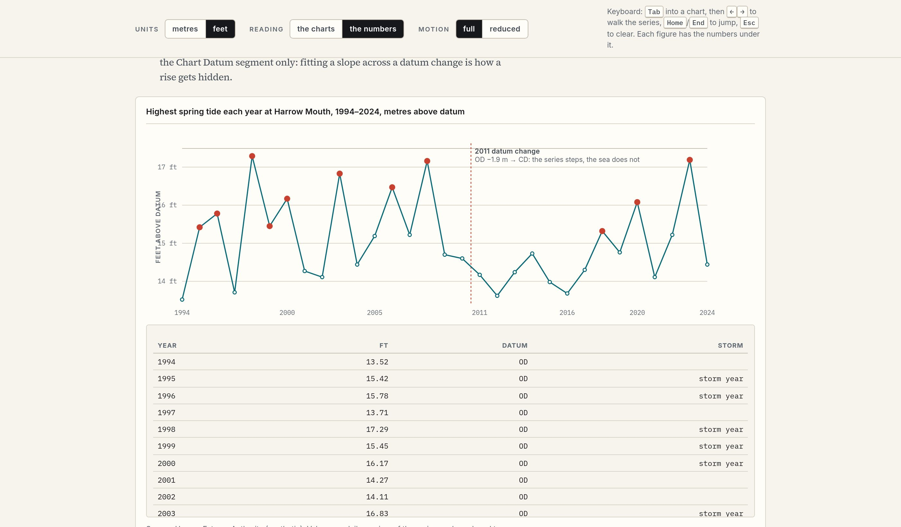
feet — index.html at 1400 px viewport, 210 KB.
console0contrast3unnamed controls0img without alt0landmarks header+main+footer
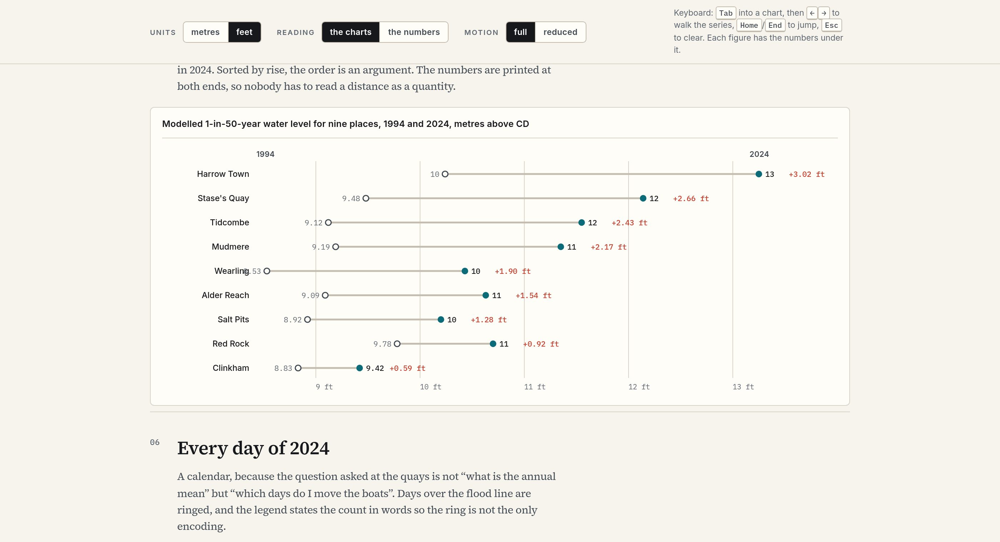
feet-slope — index.html at 1400 px viewport, 193 KB.
console0contrast0unnamed controls0img without alt0landmarks header+main+footer
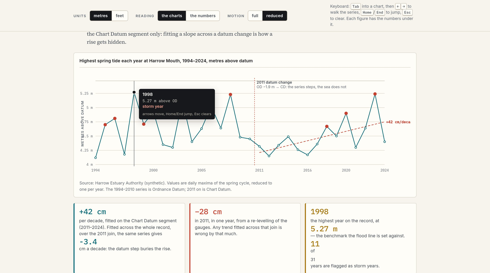
reduced — index.html at 1400 px viewport, 251 KB.
console0contrast3unnamed controls0img without alt0landmarks header+main+footer
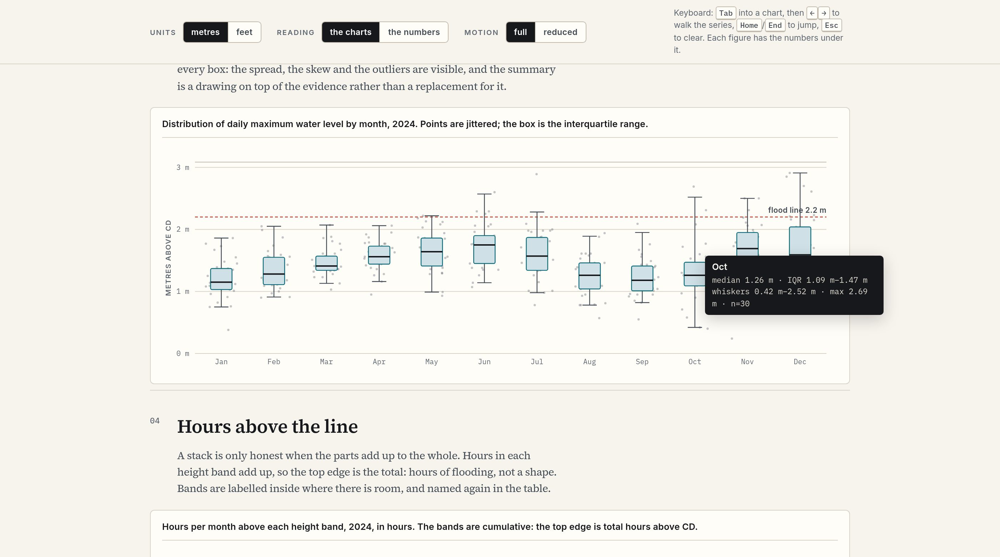
keyboard — index.html at 1400 px viewport, 244 KB.
console0contrast0unnamed controls0img without alt0landmarks header+main+footer
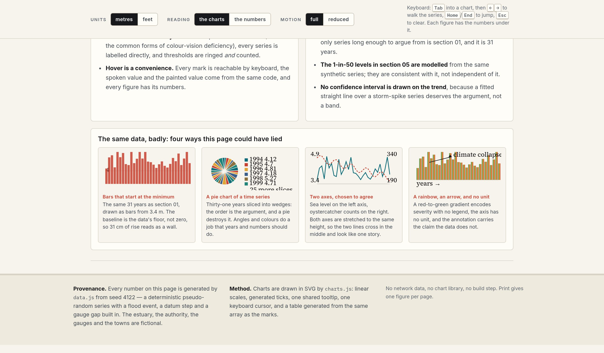
lied — index.html at 1400 px viewport, 364 KB.
console0contrast0unnamed controls0img without alt0landmarks header+main+footer
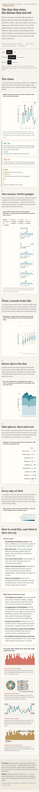
phone — index.html at 390 px viewport, whole page, 488 KB.
console0contrast3unnamed controls0img without alt0landmarks header+main+footer
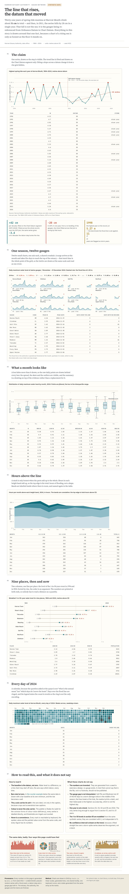
print — index.html at 1100 px viewport, whole page, 864 KB.
console0contrast3unnamed controls0img without alt0landmarks header+main+footer